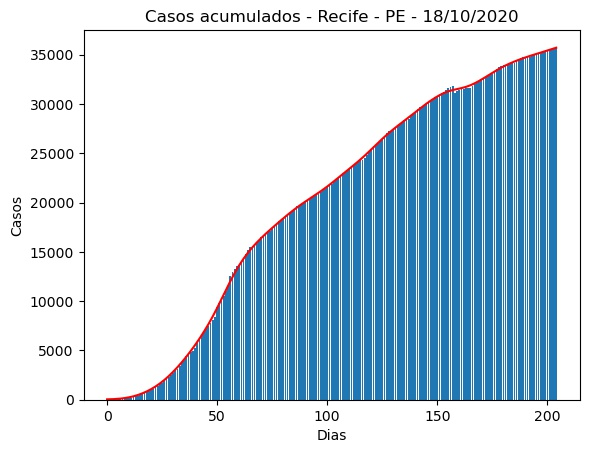
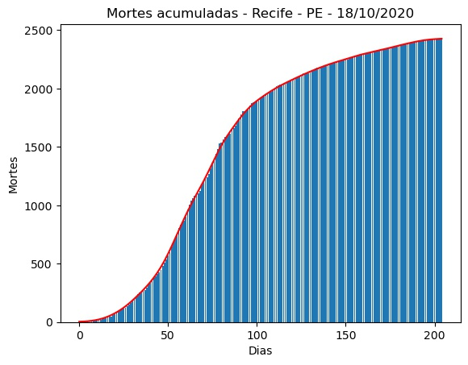
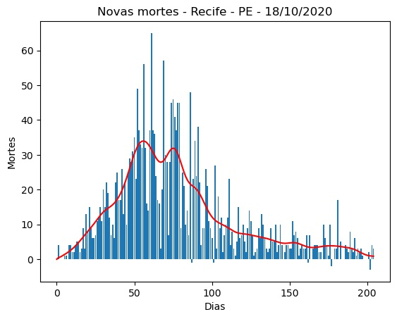
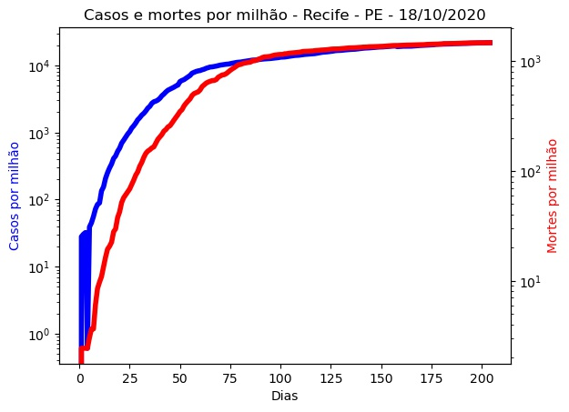
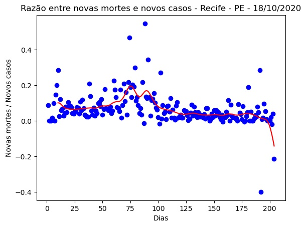
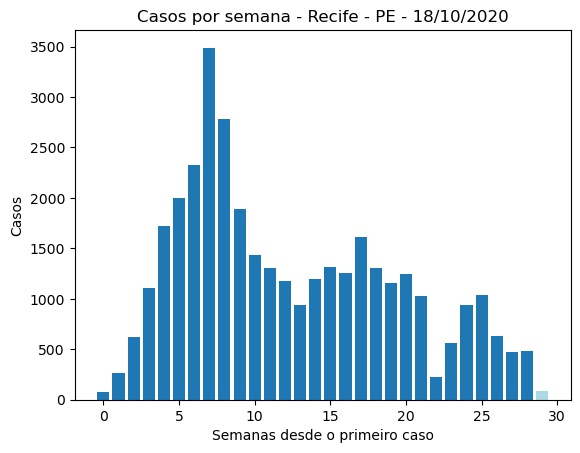
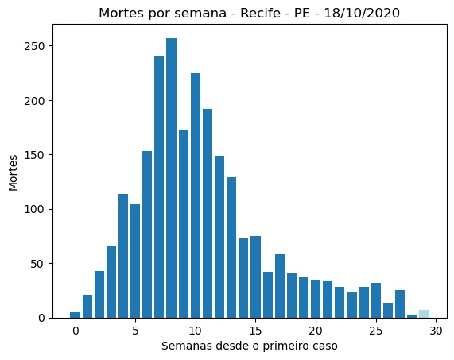
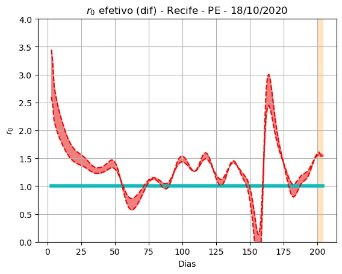
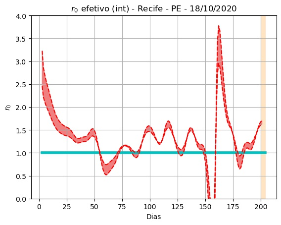
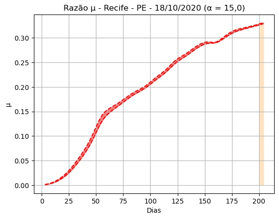

Recife - PE - 18/10/2020.
Detalhes técnicos, aqui. Clique aqui para uma versão em PDF desta análise.
População: 1.645.727.
Início e fim da série: 2020-03-27 e 2020-10-17. (205 elementos - 29 semanas e 2 dias).
Número de casos totais e mortes: 35.668 e 2.429. (21.673 e 1.476 por milhão de habitantes, respectivamente.)
r0 (integral) efetivo médio (duas últimas semanas - três dias de atraso): 1,36 (std = 0,20).
Último intervalo para r0 (três dias de atraso): (1,62 : 1,70).
Limiar imunidade de grupo nR (baseado no valor de r0 (integral) efetivo médio) = 0,26.
Previsão do número total de casos para os próximos 5 dias: 35.733, 35.798, 35.863, 35.928, 35.994.
 


 
 
 
